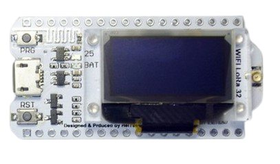
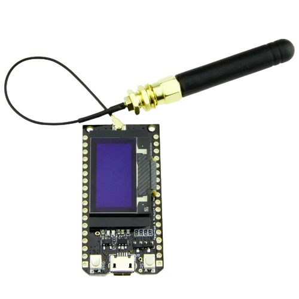
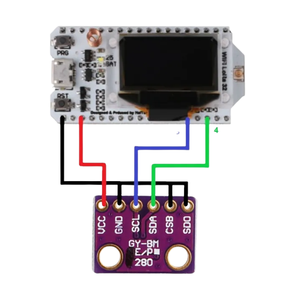
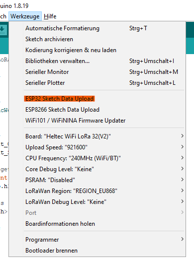

This Docs will show you
for a sensor i would use the Bme 280, it comes with Temperatur, Humidity and Air Pressure. BME280 Sensor
how you can create a lora
Based wether station
I would recommend either the heltec lora esp32 v2 
or the ttgo lora esp32 
Wiring diagramm

Here is the code for the Weather station
Code for the Sender
Code for the Reciver
You have to upload the files for the webserver, you can get the files Here

Now just upload the code and have Fun :)